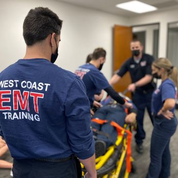

About Me
I'm a pre-medical student at the University of California, San Diego, currently pursuing a B.S. in Human
Biology. My academic journey has given me a strong foundation in the biological sciences, which I've
complemented with extensive hands-on clinical experience and involvement in research. As a certified EMT,
I've provided direct patient care in fast-paced environments and gained firsthand insight into the urgency,
empathy, and critical thinking required in healthcare.
Beyond clinical work, I am passionate about education and service. I've taught life-saving skills like CPR
to both healthcare providers and community members, mentored future EMTs, and led training initiatives as
part of UC San Diego's Emergency Medical Services club. My role as a Resident Assistant has deepened my
ability to lead with empathy, resolve conflicts, and build supportive communities. These are skills I
consider essential to any future physician.
Above all, I am committed to advancing health equity and serving underserved populations. I believe that
effective medical care begins with compassion, and I strive to bring curiosity, integrity, and purpose to
every experience I take on. I look forward to a future in medicine where I can combine my clinical skills
and social values to make a lasting impact on individual lives and community health.
Experience
Education
University of California, San Diego
B.S. in Human Biology, Expected June 2026
GPA: 3.7
Clinical Experience
Evolve Event Medical Solutions
Emergency Medical Technician | June 2024-Present
Responds to emergency calls and provides rapid assessment, stabilization, and pre-hospital
care to patients on-scene. Works alongside on-site leadership and security teams to ensure
patient care and safety. Trains and mentors new EMTs as a Field Training Officer (FTO)
Total of 250 patient care hours
Rady Children's Hospital
Emergency Room Physician Shadow | November 2024-Present
Observes pediatric emergency care in a fast-paced clinical setting, gaining exposure to acute
medical and trauma cases. Shadows during patient evaluations, diagnostics, treatment
planning, and interdisciplinary teamwork in emergencies. Gains insight into pediatric
patient communication, family-centered care, and clinical decision-making under pressure
Total of 70 shadowing hours
Teaching & Leadership

West Coast EMT Training
Emergency Medical Technician Skills Instructor | January 2024-Present
Trains up to 55 students at once in 10 NREMT skills and leads field-based scenarios for
real-life skill application. Leads other instructors through curriculums and facilitates
effective instruction across instructors. Proctors NREMT Psychomotor Examination and
evaluates competency of future EMTs.
Total of 356 teaching hours
Pepper Canyon West, UCSD
Resident Assistant | August 2024-Present
Enforces university policies and community standards to ensure safety and respect within the
dormitory. Mediates resident conflicts and utilizes conflict resolution strategies,
involving professional staff when necessary. Organizes and hosts educational and social
programs for transfer and upper-division students. Collaborates with supervisors, fellow
RAs, and campus departments to address student need
EMS at UC San Diego
Training Chair | April 2025-Present
Develops hands-on training sessions and workshops for members to teach bystander CPR in both
on- and off-campus communities. Manages connections with organizations and clubs, such as
American Red Cross and Compress and Shock. Plans and teaches training events for Stop the
Bleed, Mass Casual Incident scenarios, Trauma assessments, and more for club members
Social Chair | April 2024-April 2025
Coordinates board meetings and social events, increasing the number of paid members from 15
to 65 in three months. Networks with providers and professionals to gain resources and
contacts for club members. Teaches both bystander and healthcare provider (BLS) CPR
Certifications
- California Certified EMT
- American Heart Association BLS Instructor